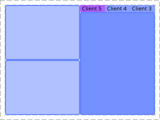
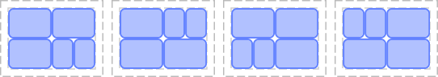
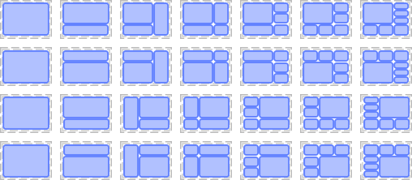
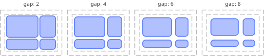
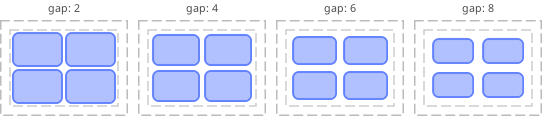
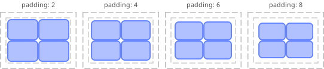
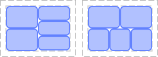
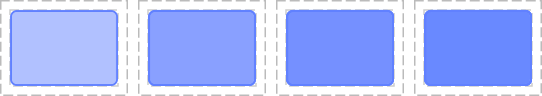
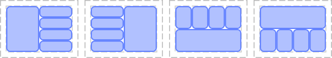
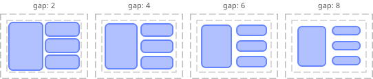

Module dynamite
A drop-in replacment for the stateless layout suits
This system also add the possibility to write handlers enabling the use of tabs, spliters or custom client decorator.
Any wibox.layout compliant layout can be implemented. Monkey-patching dynamite.widget.placeholder also allow modules to define extra features for tiled clients.
To enable this system, add require("dynamite") at the top
of your rc.lua
Overview
There is 4 ways to use this module. The first one replicates the traditional
way AwesomeWM tiling works. There is preprogrammed suits. Each suits will
place the clients according to a set of rules. This is called automatic
tiling and is the default.
The second way is to use custom suits created using the declarative syntax. unlike the old Awesome 1.x-4.x custom layout suits, it is no longer necessary to have Ph.D in geometry to get it right. It also handle features such as resizing that were never really supported by custom layouts.
The third way is manual tiling. You start with a maximized client, then manually subdivise the space as you go.
Finally, it is possible to use the floating suit, in which case the whole
thing is irrelevant and there the tiling is handled by the snapping feature.
Components
This module provide extended versions of many wibox widgets and layouts. They add extra features such as:
- Mouse resizing to the existing layouts.
- "Insertion points" to dynamically alter the layout
- Sleep and awake mode to avoid using CPU when the layout isn't displayed
While the normal variants of the layouts can be used directly, it is highly recommended to use the dynamite versions of those layouts to avoid experiencing some bugs.
TODO add an auto generated list of layouts and widgets
Custom layout examples
Simple tiling layout:

local mycustomtilelayout = dynamite { { max_elements = 1, priority = 3, layout = dynamite.layout.ratio.vertical }, { reflow = true, max_elements = 2, priority = 1, layout = dynamite.layout.ratio.vertical }, { priority = 1, layout = dynamite.layout.ratio.vertical }, layout = dynamite.layout.ratio.horizontal }
In place client spawning:
The dynamite.widget.spawn allows to add "future" clients directly into a layout:
local mycustomtilelayout = dynamite { { { command = "urxvt -e 'bash -c \"nano ~/.config/awesome\"'", widget = dynamite.widget.spawn, }, max_elements = 1, priority = 3, layout = dynamite.layout.ratio.vertical }, { { command = "urxvt -e 'top'", widget = dynamite.widget.spawn, }, reflow = true, max_elements = 3, priority = 1, layout = dynamite.layout.ratio.vertical }, layout = dynamite.layout.ratio.horizontal }
See the client.startup_id for an overview of the limitations and workarounds available to mitigate them.
A column and a layout.tabbed stack:

local mycustomtilelayout = dynamite { { reflow = true, max_elements = 2, priority = 1, ratio = 0.20, layout = dynamite.layout.ratio.vertical }, { priority = 1, layout = dynamite.layout.tabbed }, inner_fill_strategy = 'default', layout = dynamite.layout.ratio.horizontal } c1.name = 'Client '..i
Using master width factor and alignment:

local mycustomtilelayout = dynamite { { reflow = true, max_elements = 2, priority = 1, ratio = 0.20, layout = dynamite.layout.ratio.vertical }, { priority = 1, ratio = 0.80, layout = dynamite.layout.ratio.vertical }, ratio = 2.99, inner_fill_strategy = 'center', layout = dynamite.layout.ratio.horizontal }
Adding margins::
local mycustomtilelayout = dynamite { { reflow = true, max_elements = 2, priority = 1, ratio = 0.20, layout = dynamite.layout.ratio.vertical }, { { priority = 1, ratio = 0.80, layout = dynamite.layout.ratio.vertical }, margins = 3, widget = wibox.container.margin }, ratio = 2.99, layout = dynamite.layout.ratio.horizontal }
Apply a reflection::

local function gen_with_mirror(hor, ver) return dynamite { { { reflow = true, max_elements = 2, priority = 3, ratio = 0.20, layout = dynamite.layout.ratio.vertical }, { { reflow = true, max_elements = 1, priority = 2, ratio = 0.20, layout = dynamite.layout.ratio.vertical }, { reflow = true, priority = 1, ratio = 0.20, layout = dynamite.layout.ratio.horizontal }, reflow = true, layout = dynamite.layout.ratio.vertical }, reflow = true, layout = dynamite.layout.ratio.horizontal }, reflection = { horizontal = hor, vertical = ver, }, layout = wibox.container.mirror } end screen[1].selected_tag.layout = gen_with_mirror(false, false) screen[2].selected_tag.layout = gen_with_mirror(false, true ) screen[3].selected_tag.layout = gen_with_mirror(true , false) screen[4].selected_tag.layout = gen_with_mirror(true , true )
end
Use different layouts depending on the number of clients::
A basic use case with 2 type of layouts depending only on the number of client.

local mycustomtilelayout = dynamite { { reflow = true, when = function(self, t, count) -- luacheck: no unused args return count < 3 end, priority = 1, layout = dynamite.layout.ratio.vertical }, { reflow = true, when = function(self, t, count) return count >= 3 end, -- luacheck: no unused args priority = 1, layout = dynamite.layout.ratio.horizontal }, layout = dynamite.layout.conditional }
A more useful example using "real" layout suites:

local tile = require('dynamite.layout.ratio') local cond = require('dynamite.layout.conditional') local corner = require('dynamite.suit.corner') local fair = require('dynamite.suit.fair') local margin = require('wibox.container.margin') local mycustomtilelayout = dynamite { { max_elements = 3, { { priority = 2, max_elements = 1, ratio = 0.33, layout = dynamite.layout.ratio.vertical }, { max_elements = 1, priority = 1, ratio = 0.33, layout = dynamite.layout.ratio.vertical }, { max_elements = 1, priority = 3, ratio = 0.33, layout = dynamite.layout.ratio.vertical }, reflow = true, inner_fill_strategy = 'spacing', layout = dynamite.layout.ratio.horizontal }, margins = 3, widget = margin }, { reflow = true, max_elements = 4, min_elements = 4, layout = fair }, { reflow = true, min_elements = 5, layout = corner }, reflow = true, layout = cond }
Serialization and introspection
TODO show how to use awesome-client to extract and load layouts.
FAQ
Is it possible to create all layouts using the declarative syntax:
No, creating "complex" suits is required to use more advanced layout
features like master_width_factor and master_fill_policy. Declarative
custom layouts is usually good enough for the normal use cases if you
don't plan to use these properties.
If there a change of behavior compared to the classic AwesomeWM layout, is it a bug?:
It is probable a bug. Some suits gained new features such as better resizing or using tabs when there is too many clients, but otherwise they should behave the same as they used to do.
Info:
- Copyright: 2016-2018 Emmanuel Lepage Vallee
- Author: Emmanuel Lepage Vallee <elv1313@gmail.com>
Object properties
| max_elements | The (soft) limit for the number of children. |
| priority | The priority of the layout compared to its peers. |
| inner_fill_strategy | Define how to distribute the empty space. |
| reflow | When an element is removed, take one away from a lower priority layout. |
Client layouts
| dynamite.suit.corner | Replace the stateless corner layout. |
| fair | Replace the stateless fair. |
| dynamite.fair.horizontal | A fair layout prioritizing horizontal space. |
| magnifier | A client in front of a list of other clients. |
| manual | Manually declare a layout for the clients. |
| max | All clients are maximized on top of each other. |
| tile | A layout with columns and rows. |
| dynamite.tile.left | A tile layout with the slave clients on the left. |
| dynamite.tile.top | A tile layout with the slave clients on the top. |
| dynamite.tile.bottom | A tile layout with the slave clients on the bottom. |
Object properties
- max_elements
-
The (soft) limit for the number of children.
This is an hint used by the automatic placement fallback algorithm in case the layout doesn't provide its own.
It also allows rather complex layout to be defined without an imperative implementation.
If no priority is set, the layout with the highest number of free spot will be chosen.
Type:
- The number or function maximum number of elements contained by the layout or a function returning the value. (default 0)
- priority
-
The priority of the layout compared to its peers.
A "full" layout is composed of many smaller layouts, containers and widgets. When time comes to choose where to add a new client, the "full" layout can either implement its own logic tree or fallback to the default on.
In that case, the priority index will be taken into account. The higher the number is, the higher priority it has. The highest priority layout will "win" as long as the number of elements is below max_elements.
Type:
- The number or function priority or a function returning the priority. (default 0)
- inner_fill_strategy
-
Define how to distribute the empty space.
This property is only available on the tiled sections.
See also:
- reflow
-
When an element is removed, take one away from a lower priority layout.
Type:
- boolean
Client layouts
- dynamite.suit.corner
-
Replace the stateless corner layout.
This layout has a master client and a row on the side and bottom of the master client. They are resized so the two "slave" column and row are aligned.

Client count scaling:
The first row is the corner layout and the second one
corner.horizontal
master_count effect:
Unused
column_count effect:
Unused
master_width_factor effect:

gap effect:
The "useless" gap tag property will change the spacing between clients.

resize effect:

See
awful.tag.setgapSeeawful.tag.getgapSeeawful.tag.incgapscreen padding effect:

See
awful.screen.padding - fair
-
Replace the stateless fair.
This is not a perfect clone, as the stateful property of this layout allow to minimize the number of clients being moved. If a splot of left empty, then it will be used next time a client is added rather than "pop" a client from the next column/row and move everything. This is intended, if you really wish to see the old behavior, a new layout will be created.
This version also support resizing, the older one did not--

Client count scaling:
The first row is the fair layout and the second one
fair.horizontal
master_count effect:
Unused
column_count effect:
Unused
masterwidthfactor effect:
Unused
gap effect:
The "useless" gap tag property will change the spacing between clients.

See
awful.tag.setgapSeeawful.tag.getgapSeeawful.tag.incgapscreen padding effect:

Resize effect:

See
awful.screen.padding - dynamite.fair.horizontal
-
A fair layout prioritizing horizontal space.
See also:
- magnifier
-
A client in front of a list of other clients.
Client count scaling:

nmaster effect:
Unused
ncol effect:
Unused
master_width_factor effect:

gap effect:
The "useless" gap tag property will change the spacing between clients.

resize effect:
See
awful.tag.setgapSeeawful.tag.getgapSeeawful.tag.incgapscreen padding effect:
See
awful.screen.padding - manual
-
Manually declare a layout for the clients.
The following properties are honored in the blocks:
- name: The layout name
- priority: The block priority when adding new clients
- reflow: When a client is removed, should it take one away from this and add it to the one with an higher priority.
- *max_elements*: The maximium number of client for a block
- ratio: The ratio for the block FIXME
- max
-
All clients are maximized on top of each other.
Client count scaling:

nmaster effect:
Unused
ncol effect:
Unused
master_width_factor effect:
Unused
gap effect:
The "useless" gap tag property will change the spacing between clients.
screen padding effect:
See
awful.screen.padding - tile
-
A layout with columns and rows.
Variants :
The tile layout is available in 4 variants: tile,
tile.left,tile.topandtile.bottom. The name indicate the position of the "slave" columns.
Client count scaling:
In the image below, the first row represent the tile layout, the second the
tile.leftfolowed bytile.topandtile.bottom. The columns indicate how the layout change when new clients are added.
master_count effect:
The master_count property will affect number of rows in the master columns.

See tag.master_count See
awful.tag.incnmastercolumn_count effect:
When columns are added, this layout will maximize the space available to each clients in the slaves columns.

See tag.column_count See
awful.tag.incncolmaster_width_factor effect:
The master width factor is the ratio between the "master" column and the "slave" ones.

See tag.master_width_factor See
awful.tag.incmwfactgap effect:
The "useless" gap tag property will change the spacing between clients.

See tag.gap See
awful.tag.incgapscreen padding effect:

See
awful.screen.paddingOther properties:
This layout also check the client
masterandslaveproperties. If none is set, thenmasteris used and the new clients will replace the existing master one. - dynamite.tile.left
-
A tile layout with the slave clients on the left.
See also:
- dynamite.tile.top
-
A tile layout with the slave clients on the top.
See also:
- dynamite.tile.bottom
-
A tile layout with the slave clients on the bottom.
See also: